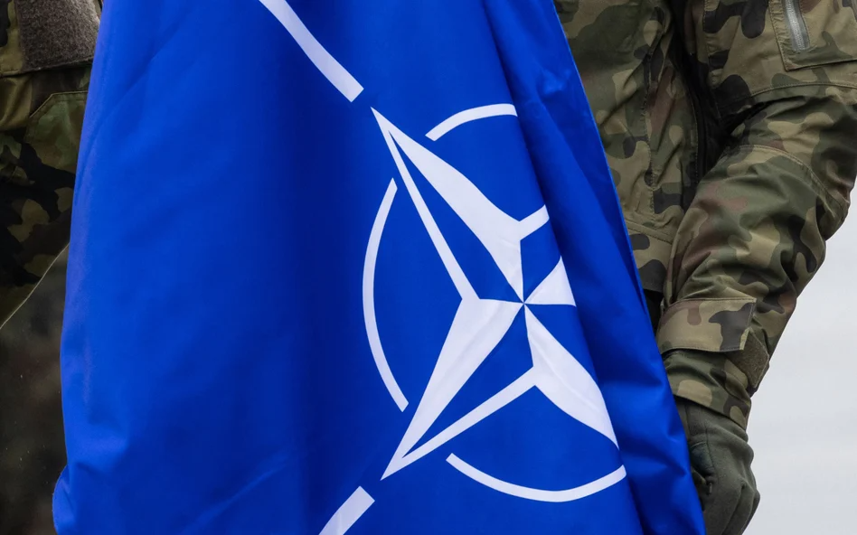
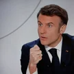

Військовий конфлікт
Військові НАТО вже в Україні. Іспанська газета підтверджує слова Сікорського
Іспанська газета "El País" повідомила, що присутність військових з країн НАТО в Україні не є чимось новим. Раніше глава Міністерства закордонних справ Радослав Сікорський (PO) заявив, що в Україні перебувають солдати НАТО. Видання заявило, що солдати НАТО не брали і не беруть участі в бойових діях.
Опубліковано: 18.03.2024 13:12

Хто відчуває на своїй спині подих імперської Росії,
вони легко могли б назвати себе Томасом Бахом (на фото) «корисний ідіот».
Фото: EPA/LAURENT GILLIERON
Мирослав Жуковський
Протягом багатьох років, після допінгового скандалу під час Ігор у Сочі в 2014 році, Томас Бах дозволяв росіянам брати участь в Олімпіаді . Хоча не було ні прапора, ні гімну, це не завадило путінській пропаганді вихваляти своїх олімпійців. Війна в Україні також не зробила Росію поза законом. МОК дозволив своїм спортсменам взяти участь у Парижі за умови, що вони не будуть пов'язані з силами і не будуть відкрито демонструвати підтримку війни . Це з самого початку була подвійна фікція: в Росії такого спортсмена важко знайти, а достовірно його перевірити ще важче. Надання рішення про допуск чи виключення росіян у певних видах спорту до міжнародних федерацій також було ухиленням, адже відомо, що багатьма з них керує Путін, а в деяких з них росіяни досі керують майже напряму.
Читати далі

Політика
Макрон: у війні в Європі винна Росія
Ігри без Росії теж однакові без них Ізраїль?
Тому ті, хто, як і ми, відчувають на своїй спині подих імперської Росії, могли б впевнено назвати Баха «корисним ідіотом». Навіть більше, ставитися до нього як до циніка, який, можливо, як і його співвітчизник і колишній канцлер ФРН Герхард Шредер, розраховує, що після закінчення олімпійської служби він сяде в раду директорів «Газпрому» чи іншої «Роснефти».
Сьогодні добре видно, що з цього нічого не вийде, бо Росія з кожним місяцем війни стає все нахабнішою і замість того, щоб із вдячністю їсти з руки Баха, вона боляче її вкусила. Проривом стало рішення Путіна організувати власні ігри у Москві та Єкатеринбурзі у вересні та запросити не лише союзників, а й увесь спортивний світ, супроводжуючи запевненнями, що це будуть справді універсальні олімпійські змагання.
Читати далі
Спорт
Владар кілець. Хто такий Томас Бах, найвпливовіша людина у світі спорту
Це реальна загроза. МОК усвідомлює, що, як і у великій політиці, Росія може розраховувати на підтримку Китаю, Індії, багатьох країн Африки, Азії та Південної Америки, а ізраїльсько-палестинський конфлікт дедалі більше обурює громадську думку, також у західних країнах. готові прийняти точку зору, що якщо Паризькі ігри будуть проводитися без росіян, вони також повинні проводитися без Ізраїлю.
Томас Бах став мішенню російської пропаганди
Наразі пропозицію стартувати без прапора та гімну росіяни вважали принизливою, але бойкотом не погрожували. Лише рішення не допустити своїх спортсменів до церемонії відкриття змусило їх розгорнути свою пропаганду. Томас Бах пройшов шлях від людини, яка неодноразово пила шампанське з Путіним, до керівника організації, що скочується до расизму та неонацизму – і не з вуст слухняних режиму спортсменів чи пропагандистів, а з вуст представників російської влади. Саме так речниця російського МЗС охарактеризувала його як "главу расистської та неонацистської організації".
Можна, звісно, дискутувати, чи не краще направити до цього комітету когось із Польщі, Латвії та Румунії, бо вони краще орієнтуються в реаліях
Бах — німець, тому назвати його неонацистом для нього має бути особливо боляче, і, ймовірно, це можна трактувати як оголошення Росією олімпійської війни, в якій не буде місця для переговорів. Тим паче, що МОК нарешті досить серйозно взявся за перевірку спортсменів, які вийдуть на Олімпіаду. Він призначив комісію з трьох осіб (віце-президент МОК, колишня синхроністка Ніколь Ховертс з Аруби, південнокорейський пінгпонгіст Ю Син Мін і зірка іспанського баскетболу Пау Газоль) для перевірки кожного російського спортсмена за критеріями, встановленими МОК.
Можна, звісно, дискутувати, чи не краще було б відправити до цієї комісії когось із Польщі, Латвії та Румунії, адже вони краще розбираються в реаліях, але це все-таки прогрес у порівнянні з порожніми словами МОК, які були в силі. протягом багатьох років.
Яке майбутнє чекає на Олімпійські ігри?
Чи змушує це повернутися до часів олімпійської холодної війни, схожої на 1980-ті, коли Захід у відповідь на агресію СРСР проти Афганістану бойкотував Ігри в Москві, а через чотири роки «країни мир і соціалізм» відповів бойкотом їм? Анджелес? Про це багато свідчить, хоча, як і тоді, спортсмена будь-якої країни буде важко переконати, що медалі Єкатеринбурга такі ж цінні, як паризькі. І навіть оголошені росіянами фінансові винагороди нічого не змінять.
Читати далі
Спорт
Вітольд Банька: Олімпійські ігри? У Парижі росіян не буде багато
Олімпійський рух пережив той конфлікт, і ніякі Ігри дружби (що проходили в 1984 році в Москві для тих, кого СРСР змусив бойкотувати Лос-Анджелес) не підірвали престиж справжніх ігор, але порятунок прийшов не в олімпійській родині, а у великій політиці. Михайло Горбачов почав правити Росією, і тому бойкотів більше не було.
Якби ця історія повторилася, довелося б чекати падіння Путіна, яке сьогодні важко уявити. Більш вірогідною є пропагандистська війна з долею Ігор.
Пов'язано
Рекомендований
Останній
Політика
Макрон: у війні в Європі винна Росія
Політика
Макрон: у війні в Європі винна Росія
Політика
Макрон: у війні в Європі винна Росія
Політика
Макрон: у війні в Європі винна Росія
Політика
Макрон: у війні в Європі винна Росія
Політика
Макрон: у війні в Європі винна Росія